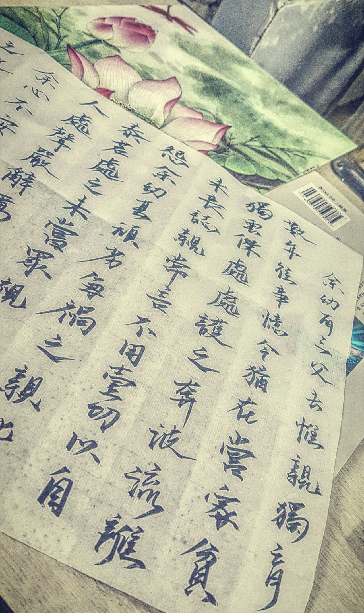

正文: 吓我一跳，作为透明
感谢天南海北的关注，虽然不咋多吧。哈哈。说实话谢谢各位对我书法的指正，因为确实是这样，临帖比较少，写的不咋地还喜欢自己发挥，我妈很鼓励我还没啥事让我写个对联啥的，当然也就我家敢贴，哈哈。
我会好好纠正字体，再次谢谢大家。下面那个字是今年三八妇女节给我妈的礼物，第一次写文言，还找了老师修正了几次。具体意思就不向大家透露了，家事啦
还有有个女孩私信我，172 ，60 觉得自己很胖，又高，很苦恼，跟我说了很多。
你知道吗，在我心里172 .你这个体重很完美了， 我就是172还在增重，因为骨头算比较小的吧，舞蹈会没有爆发力，手臂的线条也不够明显，最重要的是，
你自己不觉得你美，那么别人也不会欣赏你。
气质跟身材，长相是没有直接关系的，但是相由心生是真的。 晒个我妈吧哈哈

快二十年了，一直都是她一个带着我噢，一给她打电话她心情都很好的。 也总是嘱咐我不要吃胖，也不要太忙啦。
好像是跑题了。
有个忘说了的，小时候是大舌头，就是东北话说的地包天。愣是让我妈给矫正了。。。高中开始培养主持和播音，和专业的肯定是有一定差距，但是舞台经验真的是很宝贵，也让我知道女人气场是很重要的，决定了我们不要受制于人和对待任何环境的应变能力。
很高兴参加比赛认识很多好朋友，中国，俄罗斯，越南。
另外就是坚持读书，我的妈呀这个太有用了
尤其是即兴评述或者问答的环节，各种比赛活动都会用的到，真的。再厉害观点论点都不如一个贴切的例子或者典据，来源就是书啊，也让我们和人沟通的时候非常有底气，因为你说的这个我知道啊，我即使接不上话也不用露怯。
但是过程很漫长是真的，收获要比付出多很多，最重要是自己开心，尽管我岁数太小也没读多少，我会努力的，别太小看我。
希望能和各位共勉。
能不能放个小照片表示一下我愉快的心情。

﹉﹉﹉---分割线是哪个。。不会打啊。。。。
首答，
健身，书法，舞蹈。
无一例外，一直坚持，今年是健身的第五年了，单纯的喜欢运动，自己是闲不下来的人，喜欢充实的生活。
谁说的来的，自律给我自由，运动的时候能够思考，非常喜欢这种感觉，尤其是滑雪，游泳的时候，放松的感觉比***还好 。
一个月以前拍的。平时偶尔会熬夜，健身让我时刻精力充沛。
说说书法啦，高一的时候因为脾气不好，老是生气，然后开始练习书法，越写越喜欢，写了颜，王，特别喜欢写字的感觉，
很多东西喜欢用文字表达，也很喜欢写信，也是自我欣赏吧哈哈。

至于舞蹈真的是跳了十年了，民族的才是世界的呀哈哈，我爱蒙古，期间也跳过现代舞古典舞，最爱的还是蒙古舞，
因为我家在呼伦贝尔啦，在草原上载歌载舞实在幸福到难以言喻。
后来上大学带着自己的蒙古袍，为了演出袍子打开有圆周六米，没毛病。。很沉。。。全手工。。真很沉。。很贵。。。
有时候晚上自己听安来宁的乌兰巴托的夜，会掉眼泪，真的.爱家乡，爱妈妈。
记得柴静在方所演讲的时候说，当你意识到你在坚持的时候，就是快要结束的时候。
因为很多时候我们不是在坚持，是热爱与信仰。